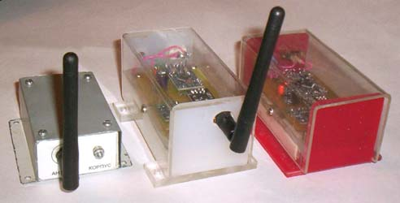
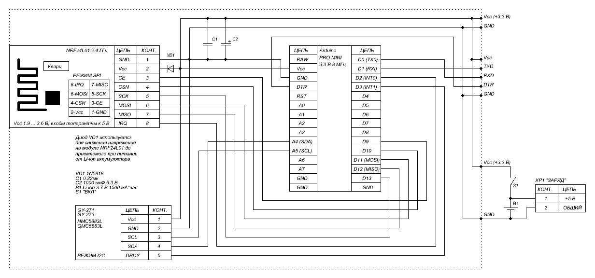
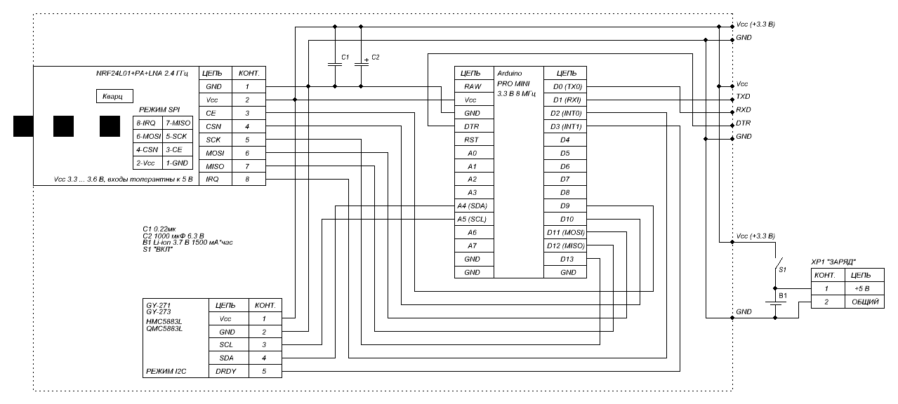
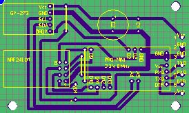
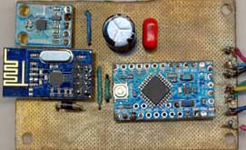
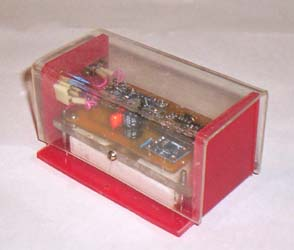
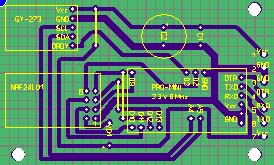
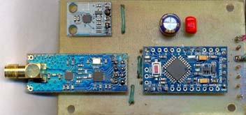
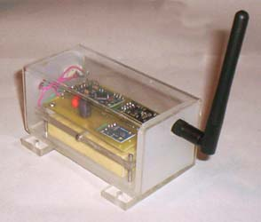

Магнитометр с
магниторезистивным датчиком
QMC5883 (HMC5883)
для мониторинга слабых постоянных полей и передачи данных по радиоканалу
2.4 ГГц

Назначение
Магнитометр предназначен для мониторинга магнитной обстановки
посредством измерения величин трех компонент и расчета модуля магнитной индукции
постоянного магнитного поля (сопоставимого с магнитным полем Земли) с помощью
магниторезистивного датчика типа QMC5883
или его близкого аналога - HMC5883
[1] и передачи данных измерений по радиоканалу на
удаленный до 100 м подключенный к компьютеру приемник [3].
В качестве рабочего выбран диапазон частот ISM
(Industrial, Scientific, Medical) 2.4 ГГц (2400
... 2483.5 МГц), где можно
использовать нелицензируемые устройства с дальностью действия примерно до 100
метров (работающие внутри зданий и производственных территорий, а также
с мощностью
излучения передающих устройств до 100 мВт включительно). Прибор имеет
автономное питание - аккумуляторную батарею, подзарядка которой может, в
частности, осуществляться с помощью солнечной или ветроэлектростанции.
Технические данные:
- одновременно измеряемые и рассчитвыаемые параметры: три
компоненты магнитной индукции Bx, By, Bz и ее
полный модуль
B
- диапазон изменений величины магнитной индукции может быть
выбран в зависимости от типа примененного датчика либо из двух: 0 ... +190.0
мкТл, 0 ... +810.0 мкТл, либо из восьми: 0 ... +88.0 мкТл, 0
... +130.0 мкТл, 0 ... +190.0 мкТл, 0 ... +250.0 мкТл,
0 ... +400.0 мкТл, 0 ... +470.0 мкТл, 0 ... +560.0
мкТл, 0 ... +810.0 мкТл с возможностью проведения измерений с
некоторым запасом на любом выбранном диапазоне
- разрешающая способность 100 нТл (0.1 мкТл)
- погрешность измерения не более 3 %
- частота измерений зависит от заданного режима и может
составлять от 1 до 200 Гц
- диапазон рабочих частот радиоканала 2.4
ГГц (2400
... 2483.5 МГц), число каналов до 126,
число устройств на одном канале до 6
- питание: встроенная аккумуляторная литий-ионная батарея
напряжением 3.7 В, емкостью от 0.4 А ∙
час, время непрерывной работы от 40 часов (зависит от режима работы и
емкости применяемой батареи), подзарядка может осуществляться с помощью
солнечных элементов или ветрогенератора
- прибор имеет естественное воздушное охлаждение, готов к
работе сразу после включения, время непрерывной работы не ограничено
- габаритные размеры прибора не более 110 х 70 х 55 мм3
(без элементов управления и подключения)
- масса прибора не более 0.2 кг
Устройство магнитометра
Электронная принципиальная схема магнитометра с
магниторезистивным датчиком QMC5883
приведена на рис. 1 и 2. Магнитометр собран из готовых модулей: микроконтроллер,
датчик
магнитной индукции, приемо-передатчик (трансивер), аккумуляторная батарея
(может иметь встроенное устройство защиты). В качестве микроконтроллера
используется Arduino Pro mini
(микроконтроллер на микросхеме ATmega328)
[2] с предварительно загруженным отладчиком,
позволяющим использовать программы, написанные на языке C
в среде программирования Arduino. Приемо-передатчик
диапазона 2.4 ГГц - узел на микросхеме NRF24L01 без
усилителя (дальность действия примерно 10 м) или с усилителем (дальность
действия до 100 м). Приемо-передатчик связан с
микроконтроллером по интерфейсу SPI.

Рис. 1. Электрическая принципиальная схема
магнитометра с радиоканалом 2.4 ГГц на дальность около 10 м.

Рис. 2. Электрическая принципиальная схема
магнитометра с радиоканалом 2.4 ГГц на дальность до 100 м.
В качестве чувствительного элемента датчика
прибора использована микросхема
QMC5883
(датчик с анизотропным магниторезистивным эффектом,
AMR-датчик). Ее неполный аналог -
HMC5883 [1] (отсутствует
температурная компенсация данных
измерений, полная совместимость на аппаратном уровне, неполная совместимость на
программном уровне). В состав микросхемы входят три
магниторезистивных датчика, оси максимальной чувствительности которых
взаимноортогональны. Связь датчика с микроконтроллером выполнена по интерфейсу
I2C.
Для увеличения точности при проведении измерений может применяться процедура их
усреднения по некоторому заданному количеству отсчетов с датчика.
Питание узлов прибора осуществляется от литий-ионной аккумуляторной батареи
напряжением 3.7 В. При необходимости записи программы к микроконтроллеру
подключается внешний модуль преобразователя интерфейса USB -
UART [4]. В качестве приемника данных
используется подключенный к компьютеру преобразователь интерфейса
USB - COM-порт с радиоканалом 2.4 ГГц
[3].
Все узлы магнитометра смонтированы на кросс-плате. Эскиз и
внешний вид платы показаны на рис. 3, 5. Кросс-плата с модулями и аккумулятор
смонтированы в немагнитном токонепроводящем корпусе со съемной крышкой (рис. 4,
6). Крышка сделана прозрачной для удобства ориентации прибора и отслеживания
индикации.


Рис. 3. Плата магнитометра с радиоканалом 2.4
ГГц на дальность около 10 м (эскиз и внешний вид). Размер платы 75 х 45
мм2.

Рис. 4. Внешний вид магнитометра с
радиоканалом 2.4 ГГц на дальность около 10 м. Габаритные размеры примерно
110 х 70 х 55 мм3.


Рис. 5. Плата магнитометра с радиоканалом 2.4
ГГц на дальность до 100 м (эскиз и внешний вид). Размер платы 75 х 45 мм2.

Рис. 6. Внешний вид магнитометра с
радиоканалом 2.4 ГГц на дальность до 100 м. Габаритные размеры примерно
110 х 70 х 55 мм3 (без антенны).
Калибровка магнитометра осуществляется программным способом.
Для калибровки можно использовать кольца Гельмгольца [6]
с известным коэффициентом преобразования по току.
Программное обеспечение
Вариант программы для магнитометра с
передатчиком на языке C в среде
Arduino (передача данных непрерывная):
|
//Датчик
QMC5883
#include <SPI.h>
#include <Wire.h> // I2C Arduino Library
#include <nRF24L01.h>
#include <RF24.h>
#define addr 0x0D // I2C Address for QMC5883L
#define reg_2G 0x0D // Загрузка режима работы и диапазона
измерений 2 Гс в регистр 09H
#define Bxoff 1.5 // Сдвиг по x,
мкТл
#define Byoff 1.0 //
Сдвиг по y, мкТл
#define Bzoff 0.0
//
Сдвиг по z, мкТл
#define Num_Of_Meas 250 // Число измерений для усреднения
int x, y, z
;
// triple axis data. Данные с регистров
long x1, y1, z1 ; // Суммированные
данные для усреднения
double Bx, By, Bz, B ; // Значения магнитной индукции в мкТл
int i ;
// Счетчик
double Kx190 = 120.0 ; // калибровочный коэффициент по x
double Ky190 = 120.0 ; // калибровочный коэффициент по y
double Kz190 = 120.0 ; // калибровочный коэффициент по z
int RDY ;
// готовность данных
const uint64_t pipe = 0xF0F1F2F3F4LL ; // идентификатор
приемопередающего канала
RF24 radio(9, 10)
; // CE, CSN подключены к выходам D9 и D10
Pro mini
void setup(){
Serial.begin(9600) ;
pinMode(3, INPUT)
; //
вход DRDY
radio.begin() ;
// начало работы с чипом nRF24L01
delay(2)
; // задержка на 2 мс
radio.setChannel(9)
; // канал (0
- 127)
radio.setDataRate(RF24_1MBPS) ; // скорость передачи
данных
radio.setPALevel(RF24_PA_MAX)
; // максимальная мощность передатчика
0
dBm
radio.openWritingPipe(pipe) ;
// открываем канал с идентификатором pipe = 0xF0F1F2F3F4LL
}
void loop()
{
measure_2G() ;
Calc_B() ;
float data[4] ; // массив данных
data[0] = Bx ;
data[1] = By ;
data[2] = Bz ;
data[3] = B ;
radio.write(&data, sizeof(data)) ; //
отправка данные с указанием размера
}
void measure_2G()
{ // Измерение
Wire.begin()
;
Wire.beginTransmission(addr)
;
Wire.write(0x0B)
; // Установка
QMC5883L
Wire.write(0x01)
;
// Запись в регистр
Wire.endTransmission()
;
Wire.beginTransmission(addr)
;
Wire.write(0x09)
; //
Установка QMC5883L
Wire.write(reg_2G ) ; // Запись в регистр
// Set the
Register 0x09 to 0x0D - OSR_512_RNG_2G_ODR_200Hz_Mode_Continuous
Wire.endTransmission()
;
x1 = 0 ;
y1 = 0 ;
z1 = 0 ;
for(i = 1; i<=Num_Of_Meas; i++)
{
lab1: //
опрос по выводу DRDY
if (digitalRead(3) == LOW) {goto lab1 ;}
Wire.beginTransmission(addr) ;
Wire.write(0x00) ; //start with
register 3
Wire.endTransmission() ;
//
Read the data.. 2 bytes for each axis.. 6 total bytes
Wire.requestFrom(addr, 6)
;
if (6 <= Wire.available()) {
x = Wire.read() ; //
MSB x
x |= Wire.read() << 8 ; //
LSB x
y = Wire.read() ; //
MSB z
y |= Wire.read() << 8 ; //
LSB z
z = Wire.read() ; //
MSB y
z |= Wire.read() << 8 ; //
LSB y
}
x1 = x1 + x ;
y1 = y1 + y ;
z1 = z1 + z ;
}
void Calc_B() {
// Вычисление
Bx = Bxoff +
(double)(x1)/Kx190/(double)Num_Of_Meas ;
By = Byoff + (double)(y1)/Ky190/(double)Num_Of_Meas ;
Bz = Bzoff + (double)(z1)/Kz190/(double)Num_Of_Meas ;
B = sqrt(Bx*Bx+By*By+Bz*Bz) ;
} |
Вариант программы для приемника на языке
C в среде Arduino:
|
#include
<nRF24L01.h>
#include <RF24.h>
#include <RF24_config.h>
#include <SPI.h>
const uint64_t pipe = 0xF0F1F2F3F4LL ; //
идентификатор приемопередающего канала
RF24 radio(9, 10); // CE, CSN подключены к выходам D9 и D10
Pro mini
byte massiv[4] ;
void setup()
{
Serial.begin(9600) ; // скорость передачи данных 9600
radio.begin() ; // начало работы с чипом nRF24L01
delay(2) ; // задержка на 2
мс
radio.setChannel(9) ; // выбор коммуникационного канала (0
- 127)
radio.setDataRate(RF24_1MBPS) ; // скорость
передачи данных
radio.setPALevel(RF24_PA_MAX) ; //
максимальная мощность передатчика 0
dBm
radio.openReadingPipe(1, pipe) ; // открываем один канал с
идентификатором pipe = 0xF0F1F2F3F4LL
radio.startListening() ; // включаем приемник, начинаем
прослушивание
}
void loop()
{
if (radio.available()){ // проверяем буфер
float data[4] ; // создаем массив из 4-х переменных
radio.read(&data, sizeof(data)) ; // читаем данные,
указываем сколько байт читать
Serial.print("Bx: ") ;
// выводим значение компоненты Bx магнитной
индукции
Serial.print(data[0]) ;
Serial.println(" mkT") ;
Serial.print("By: ") ; // выводим значение
компоненты
By магнитной индукции
Serial.print(data[1]) ;
Serial.println(" mkT") ;
Serial.print("Bz: ") ; // выводим
значение компоненты Bz магнитной
индукции
Serial.print(data[2]) ;
Serial.println(" mkT") ;
Serial.print("B: "); // выводим значение
модуля
B магнитной индукции
Serial.print(data[3]) ;
Serial.println(" mkT") ;
Serial.println() ;
} else {
Serial.println("nodata") ; // сообщение об отсутствии
данных
}
} |
Для совместной работы магнитометра с компьютером используется
преобразователь интерфейса USB - COM-порт
с радиоканалом 2.4 ГГц [3]. Интерфейс одного из
вариантов программы передачи данных прибора к компьютеру и вывода показаний на
монитор показан на рис. 7. Файл программы:
MT_30.rar (~177 Кб, архиватор
WinRAR).

Рис. 7. Интерфейс программы для вывода данных измерений
магнитометра на монитор компьютера.
Желающие приобрести или самостоятельно изготовить магнитометр
с магниторезистивным датчиком QMC5883
(HMC5883) могут обратиться за дополнительной информацией к автору (см.
раздел Контактная информация).
Соотношения между единицами измерения магнитной
индукции (Тл - Тесла, Гс - Гаусс):
- 1 Тл = 10000 Гс
- 1 мТл = 10 Гс
- 1 мкТл = 10 мГс
- 1 нТл = 10 мкГс
- 1 Гс = 0.1 мТл = 100 мкТл
- 1 мГс = 100 нТл
Ссылки:
- http://honeywell.ru (сайт фирмы Honeywell)
- Аппаратная платформа Ардуино |
Arduino.ru. Электронный ресурс:
http://arduino.ru . Доступен по
состоянию на 16.12.2017.
-
Преобразователь интерфейса USB - COM-порт - радиоканал (2.4 ГГц)
-
Преобразователь интерфейса USB - RS-232 (COM-порт)
- Приборы для
измерения магнитных полей
- Системы колец
Гельмгольца (катушки Гельмгольца)
Словарь
терминов:
- Кольца Гельмгольца - система из двух одинаковых
кольцевых витков с током, расположенных соосно на расстоянии радиуса витка
друг от друга и соединенных между собой последовательно. В центре системы
имеется зона однородного магнитного поля.
- Магнитная индукция - вектор, численно
равный пределу отношения силы, действующей со стороны магнитного поля на
элемент проводника с электрическим током, к произведению тока и длины
элемента проводника, если длина этого элемента стремится к нулю, а элемент
так расположен в поле, что этот предел имеет наибольшее значение, и
направленный перпендикулярно к направлению элемента проводника и к
направлению силы, действующей на этот элемент со стороны магнитного поля,
причем из его конца вращение по кратчайшему расстоянию от направления силы к
направлению тока в элементе проводника должно быть видно происходящим против
часовой стрелки.
- Магнитное поле
- разновидность электромагнитного поля, создаваемая движущимися
электрическими зарядами или токами и оказывающая силовое воздействие на
движущиеся электрические заряды или токи.
- Магнитометр - прибор для магнитных
измерений.
- Магниторезистивный преобразователь (датчик)
- устройство для получения зависящего от магнитной индукции электрического
сигнала, принцип работы которого основан на магниторезистивном эффекте.
- Магниторезистивный эффект - изменение
электрического сопротивления проводника или полупроводника при помещении его
в магнитное поле.
06.01.2018
Альтернативные источники
энергии
Компьютеры и
Интернет
Магнитные поля
Механотронные системы
Перспективные
разработки
Электроника и
технология
Главная страница